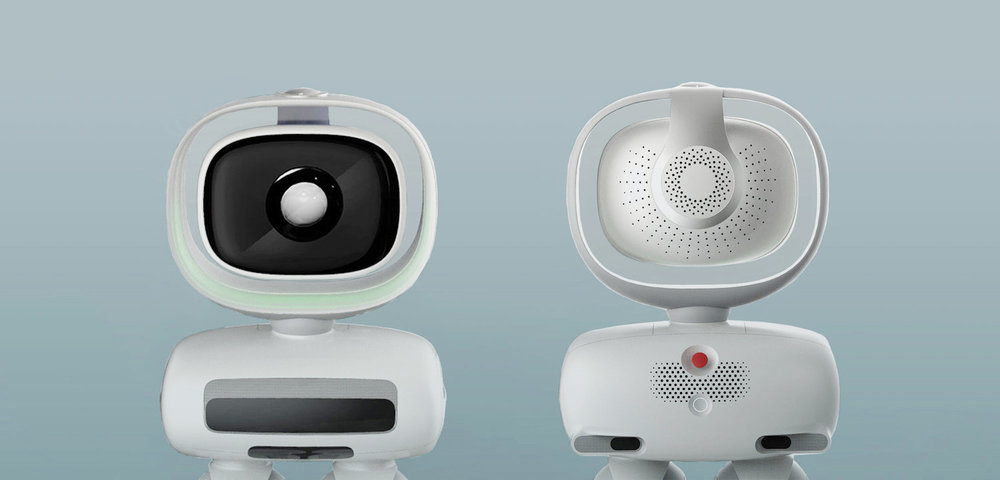

Intro
UBTech is a robotics company based in Shenzhen, China. In 2016, I was part of a small team hired to work on development of a design language for the company’s bipedal home assistant robot. This robot, affectionately known as Walker, is 4ft. tall and was specifically being designed for tech-savvy early adopters. It represented UBTech’s largest robot and its first effort to gain mainstream exposure in the U.S.
UBTech’s goal was to have a fully skinned robot ready for CES, a milestone only 6 months out from the project start date. The functional design of Walker was to happen in parallel with design of the external skins, a risky but necessary reality of the tight timeline.
My Role
I served as both the engineer and Project Lead for this project, translating between the engineering-heavy UBTech team and my industrial design colleagues. Because of my engineering background, I could comprehend the constraints imposed by the existing Walker robot hardware design. I helped align the design team on a shared understanding of functional requirements key for the robot’s performance. I also advised on how the skin parts could be broken out and manufactured. Lastly, I assisted in cross-cultural communication since I had prior experience working on teams in Asia and the U.S.
The Results
Our concept for Walker was unveiled at CES 2018. Below, you can see rendered images of our concept and real videos of Walker in action!